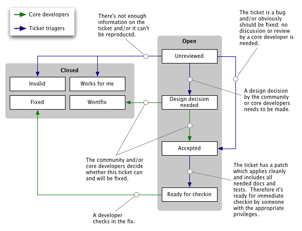

| revision-up-to: | 8961 (1.0) |
|---|
Django を 使う のを楽しいと思ってもらえたなら、 使い続ける 前にすこし待っ てください。私達は多大な情熱をかけて、ユーザがコミュニティのメンバに貢献で きるよう手助けしています。Django の開発を手伝うにはいくつもの方法があります:
Django 開発コミュニティに参加するのに必要な知識はこれだけです。このドキュメ ントの残りの部分では、開発コミュニティがどのようになっていて、どうやってバ グを処理しているかについて詳しく説明し、メーリングリストやその他こまごまと した注意点について記述しています。
上手に書かれたバグ報告は 信じられないくらい 助けになります。とはいえ、バ グ追跡システムでの作業はかなりのオーバヘッドを要するので、チケットトラッカ をできるだけ有意義に使うよう協力していただけると助かります。特に:
セキュリティ問題の報告は security@djangoproject.com にお願いします。このメー リングリスト経験豊かで信頼できる Django 開発者だけが購読でき、アーカイブは 非公開になっています。
Django に脆弱性が発見された場合、私達は以下のように行動します:
Django のコードに対するパッチはつねに大歓迎です。実際、パッチつきのバグ報告 は、パッチのないものよりも はるかに 素早く修正されます。
世界中に何百人ものコントリビュータを擁するようなオープンソースプロジェクト では、コミュニケーションを効率的に進めることで、同じ作業が何度も繰り返され るのを防ぎ、コントリビュータができるだけ効果的に振る舞えるような配慮が重要 です。そのため、コントリビュータがチケットをクレームし、他の開発者たちに、 何らかのバグ報告や機能提案がなされていることを知らせるという方針をとります。
Django プロジェクトに何らかの貢献をしたいと考えていて、 (コード作成能力や、 Django の内部に関する知識、時間的な余裕から) 必要な修正を行えるのなら、以下 のステップに従ってチケットをクレームしてください:
チケットをクレームした人は、そのチケットが時代おくれにならないよう作業せね ばなりません。チケットに時間を割けないのなら、クレームを解除するか、そもそ もクレームしないようにしてください！
チケットのトリアージ担当者たちは、クレーム済みのチケットを何度も調べて、各々 のチケットに進捗があるかどうか調べます。クレーム状態にあるチケットが進捗し ないまま 1 週間以上過ぎた場合、チケットが独占されつづけないよう、クレームを 解除してほしい旨問い合わせる場合があります。
チケットをクレームしてから、コードを書くまでにしばらく (数日から数週間) かかる場合、何らかのコメントをポストして、その旨を通知してください。更新が なく、進捗レポートの要求に対する返事もない場合、チケットを無効にする場合も あります。まずは連絡第一です!
もちろん、わざわざチケットをクレームするまでもない場合もあります。ドキュメ ントのタイプミスや、ほんの数分あれば修正できるような小さなバグの場合には、 チケットのクレームまでする必要はありません。単にパッチを投稿して、そのまま にしておいてください。
「重要 (non-trivial)」パッチとは、単なるバグフィクスに留まらず、Django に 新たな機能をもたらし、何らかの設計上の判断を迫るようなパッチです。
重要パッチを提出する場合には、その問題について django-developers で議論 済みであるという証明を含めてください。自分のパッチが重要パッチかどうか判断 しかねる場合には問い合わせてください。
残念ながら、 チケットトラッカ に届くバグ報告全てが、上に述べた チケットの要件 を満たしているわけではありません。 パッチの添付されたチケットもたくさんありますが、それら全てが よいパッチ の要件を満たしているわけでもありません。
こうした状況の打開を手助けする一つの方法に、他のユーザが報告したバグのトリ アージ (選別) 作業があります。この作業には献身的なボランティア 2 名が常時携 わっていますが、手助けをしてくれる人は常に歓迎です。
トリアージ作業のワークフローの大半は、チケットの「トリアージ段階 (triage stage)」というフィールドに関わる作業です。このステージとは、あるチケットが ライフサイクルのどの段階にあるかを示す指標です。ステージフラグやその他のフ ラグによって、誰のどんなチケットが処理待ちになっているかがわかります。
百聞は一見にしかずですから、例を挙げて説明しましょう:
チケット処理の流れには、まず、 2 種類の公認の役割があります:
次に、トリアージ作業には以下の 5 つのステージがあります:
ワークフローにはもう 1 つ、一連のフラグがあります。フラグは各チケットを 「チェックイン可」にするために必要な条件のうち、何が満たされていて何が必要 かを示します:
チケットは色々な形で解決されます:
あるチケットが明らかに誤ってクローズされた – クローズされたチケットで提起 されている問題が依然として生じている場合や、別の問題が生じた場合、あるいは トリアージ作業でミスが起きている – 場合には、そのチケットを再度開いて (reopen)、その理由を記載してください。また、コア開発者が “wontfix” にマーク したチケットを reopen しないでください。
コア開発者やトリアージ担当者がチケットのトリアージ作業で重要な決定を行う一 方で、一般コミュニティのメンバもまた、トリアージ作業に参加できます。 具体的には、以下のようなトリアージ補助があります:
とはいえ、一般コミュニティのメンバがチケットデータベースを操作する際には、 以下の点に気をつけてください:
admin サイトやバリデータのエラーメッセージなど、Django は様々な部分で国際化 されており、ユーザの言語設定に従って様々なテキストを表示します。この機能を 実現するために、Django は共通の国際化メカニズムを使っています。国際化メカニ ズムはどのアプリケーションからも利用できます。利用法は i18n のドキュメント で解説しています。
翻訳カタログは世界中の Django ユーザによる貢献でできています。間違った翻訳 や、まだ翻訳存在しない言語に新たな翻訳を追加したい場合は以下のようにします:
Django i18n メーリングリスト に参加して自己紹介してください。
i18n のドキュメント に従って翻訳を作成してくださ い。カタログの生成には django-admin.py makemessages ツールを使い ます。 Django 全体のカタログを生成する場合、 Django のソースツリーの トップレベルにある django ディレクトリでコマンドを実行してくださ い。
このツールは、 Django のソースツリー全体を走査して、翻訳対象としてマー クされた文字列を取り出します。メッセージカタログファイルは conf/locale ディレクトリ以下に生成（または更新）されます。 （例えば、 pt-BR ロケールであれば、ファイルは conf/locale/pt-br/LC_MESSAGES/django.po に書き出されます。）
django-admin.py compilemessages -l <lang> を実行して、警告がでな いのを確認してください。
上の二つのステップを、 djangojs ドメインに対しても実行してくださ い。 (django-admin.py のコマンドラインに -d djangojs オプショ ンを付加して実行します)
最新の Subversion trunk に対して、 .po ファイルの差分を作成してください。
Django のチケットシステムで新しいチケットを作成し、 Component フィー ルドを Translations に設定して、パッチを添付して提出してください。
コードを書いて Django に取り込みたいなら、以下のコーディング標準に従って下 さい:
特に指定のない限り PEP 8 に従って下さい。
pep8.py のようなツールを使えば、コーディング標準に従っているかどう かをチェックできます。とはいえ、 PEP 8 はガイドにすぎません。まずは、 周辺のコードのスタイルを尊重してください。
インデントにはスペース 4 つを使います。
変数名、関数名、メソッド名には camelCase ではなくアンダースコアを使っ て下さい (たとえば poll.getUniqueVoters ではなく poll.get_unique_voters())。
クラス名 (やクラスを返すファクトリ関数) には InitialCaps を使って ください。
国際化の必要な全ての文字列をマークしておいてください。詳しくは i18n ドキュメント を参照してください。
docstring 内では、下記のような “action word” を使ってください:
def foo():
"""
Calculates something and returns the result.
"""
pass
以下のような書き方をしてはなりません:
def foo():
"""
Calculate something and return the result.
"""
pass
コード中に自分の名前を埋め込まないでください。Django プロジェクトでは、 コードの開発者や貢献者の名前がコード中に散逸しないようにするため、 AUTHORS ファイルにまとめて記載するというポリシを採用しています。 ほんのちょっとした変更でないかぎり、ご自分のパッチに AUTHORS への 変更を加えて頂いてもかまいません。
Django テンプレートコード内では、波括弧とタグコンテンツの間に 1 個 (1 個だけ) スペースをいれて下さい。
[正]:
{{ foo }}
[誤]:
{{foo}}
Django のビューを書くときには、最初のパラメタは必ず request とい う名前にしてください。
[正]:
def my_view(request, foo):
# ...
[誤]:
def my_view(req, foo):
# ...
フィールド名は全て小文字で、キャメルケース (camelCase のような書き方) はせず、アンダースコアを使います。
以下のような書き方をします:
class Person(models.Model):
first_name = models.CharField(max_length=20)
last_name = models.CharField(max_length=40)
以下のような書き方をしてはなりません:
class Person(models.Model):
FirstName = models.CharField(max_length=20)
Last_Name = models.CharField(max_length=40)
class Meta はフィールドの定義を書いた 後 に書きます。また、フィー ルド定義とクラス定義の間には一行空行を入れます。
以下のように書きます:
class Person(models.Model):
first_name = models.CharField(max_length=20)
last_name = models.CharField(max_length=40)
class Meta:
verbose_name_plural = 'people'
以下のような書き方をしてはなりません:
class Person(models.Model):
first_name = models.CharField(max_length=20)
last_name = models.CharField(max_length=40)
class Meta:
verbose_name_plural = 'people'
以下のような書き方もよくありません:
class Person(models.Model):
class Meta:
verbose_name_plural = 'people'
first_name = models.CharField(max_length=20)
last_name = models.CharField(max_length=40)
モデルの内部クラスや標準メソッドの順番は以下のようにします (ただし、 どれも必須ではないので省略してもかまいません):
choices をモデルフィールドに定義する場合、選択肢は、各選択項目の タプルからなるタプルで定義します。定義はモデルモジュールの冒頭か、各 モデルクラスのすぐ上に置き、全て大文字の変数名を付けます。例えば以下 のようにします:
GENDER_CHOICES = (
('M', 'Male'),
('F', 'Female'),
)
私達は、ドキュメントの一貫性と読みやすさをとても重視しています (なんといっ ても、 Django はジャーナリズムの中で生まれましたからね！)
_How to document new features:
私達は、ドキュメントをコードと同じように扱います。すなわち、可能な限り改善 を重ねたいと思っているのです。この節では、ドキュメントの書き手に、有意義で エラーの少ないドキュメントの変更方法を説明します。
ドキュメントの変更には、二つの形式があります:
私達はドキュメントを以下のポリシに従って作成しています:
新たな機能に関するドキュメントを追加する場合、必ず該当機能が開発版の Django でのみ使用可能な旨を明記せねばなりません。ドキュメントの読み手は、 開発版ではなく、最新のリリースを使っていると想定してください。
新しい機能を説明するときには、ドキュメントの先頭に ".. versionadded:: X.Y" を付加します。オプションで一行コメントを入れることもできます。 ".. versionadded:: X.Y" の後には必ず空行を入れてください。
一般的な改善や API の変更は、 ".. versionchanged:: X.Y" ディレクティブで強 調します（フォーマットは versionadded と同じです）。
私達は、 ReST ドキュメントを作成するときに、以下のガイドラインに従っていま す:
ドキュメント中でよく使われる用語の書き方を以下に示します:
Django の Subversion リポジトリにコードをコミットする場合には以下のガイドラ インに従って下さい:
中規模から大規模な変更 (「中規模から大規模」の判断は各自に任せます) の際には、変更前に django-developers メーリングリストに相談を持ち 込んで下さい。
django-developers に持ち込んだ話題に対して返事がなかった場合、自分 のアイデアが素晴らしく、すぐにでも実装すべきだと皆が思ったため誰も何 も言わないのだと勘違いしないでください。 Django の開発指揮者はメーリ ングリストの議論にすぐに割ける時間を持ち合わせていないので、返事には 数日待たねばならない場合もあるのです。
詳しいコミットメッセージを過去形で書いて下さい。現在形を使ってはなり ません。
ブランチにコミットする場合、コミットメッセージの先頭にブランチ名を付 けて下さい。例えば "magic-removal: Added support for mind reading." のようにします。
意味のある変更のまとまりであるかぎり、できるだけ細かい変更に分けてコ ミットしてください。つまり、たまに大きなコミットをするのではなく、小 さなコミットを頻繁に行うようにしてください。例えば、機能 X を実装して いて、その機能の実現にライブラリ Y の修正が必要なら、まず Y の修正を コミットして、次に X を別にコミットしてください。これだけで、 Django のコア開発者全員が変更を追うための 大きな 助けになります。
コミットによって Django チケットトラッカ の何らかのチケットをクロー ズする場合、コミットメッセージの先頭に "Fixed #abc" というメッセージ を入れて下さい。 "abc" はコミットによって修正されるチケットの番号です。 例えば "Fixed # 123 -- Added support for foo" のようにします。私達は Subversion と Trac を結びつけているので、この形式のメッセージを使って commit した場合、関連するチケットを自動的にクローズし、完全なコミット メッセージをコメントとしてチケットに追加します。
コミットによってブランチのチケットをクローズする場合、ブランチ名を先 にもってきます。例えば "magic-removal: Fixed #123 -- Added whizbang feature." のようにします。
ちなみに、この機能は Trac の post-commit フック で実現しています。
コミットメッセージで Django チケットトラッカ の何らかのチケットを 参照し、かつチケットを 閉じない 場合、 "Refs #abc" というフレーズを 入れて下さい。 "abc" はコミットで参照しているチケットの番号です。私達 は Subversion と Trac を結びつけているので、この形式のメッセージを使っ て commit した場合、関連するチケットに完全なコミットメッセージをコメ ントとして追加します。
Django には独自のテストスイートが付属しています。テストは tarball 内の test ディレクトリ下にあります。ポリシとして、常に全てのテストがパスする ようにしています。
テストでは以下の項目をカバーしています:
テストスイートに対する協力は何でも歓迎します!
Django のテストは全て、 Django に付属のアプリケーションテストインフラを使っ ています。テストの書き方の詳細は Django アプリケーションのテスト を参照してください。
テストを実行するには、 tests/ ディレクトリ下に移って以下のように入力し ます:
./runtests.py --settings=path.to.django.settings
そうです。テストには設定モジュールが必要です。とはいえ、必要なのは DATABASE_ENGINE を含むデータベース接続に関する情報です。また、全 てのテストをパスするには、 ROOT_URLCONF 設定 (この値は単にあれば よいだけで、内容は無視されます) を指定しておかねばなりません。
sqlite3 バックエンドを使っているなら、設定はこれだけで十分です。一時デー タベースはテスト実行時にメモリ上に生成されます。
sqlite3 以外のバックエンドを使っている場合は、以下のような設定が必要で す:
また、データベースのデフォルト文字セットを UTF-8 にしているか確認してくださ い。データベースサーバのデフォルト文字セットが UTF-8 に設定されていないのな ら、 TEST_DATABASE_CHARSET に文字セットを指定する必要があります。
テストを全て実行したければ、以下の依存モジュール全てをインストールしておく 必要があります:
これらの依存モジュールはなくても構いませんが、インストールされていなければ、 関連するテストは飛ばして実行されます。
ユニットテストの一部（サブセット）を実行したい場合は、 runtest.py コマ ンドラインの後にテストモジュールの名前を追加してください。モジュール名は、 tests/modeltests および tests/regressiontests 以下のディレクトリ名 を参照してください。
例えば、 Django が PYTHONPATH 上になく、 settings.py が tests/ ディレクトリにある場合で、汎用リレーション (generic relation) と国際化 (internationalization) だけをテストしたければ、以下のようにタイプします:
PYTHONPATH=..
./runtests.py --settings=settings generic_relations i18n
django/contrib 以下のアプリケーションのテストは、 django/contrib/ 以下のそれぞれのディレクトリ下にある test.py に収められています。 (テストを複数のモジュールに分割したければ、 tests ディレクトリを使って ください。)
アプリケーションのテストを見つけさせるには、アプリケーション内に models.py を入れていなければなりません (ファイルは空でもかまいません)。 URL をマップする必要があるのなら、 tests/urls.py を入れてください。
特定の contrib アプリケーション (例えば markup) だけをテストするには、 上で述べたのと同じ方法を使います:
./runtests.py --settings=settings markup
私達は常に Django を改良しようと努めています。その中で、皆さんから寄せられ る要望は一つの鍵になっています。効果的に要望を出すコツをいくつか紹介してお きます:
ほとんどのオープンソースプロジェクトと同じく、コードは大きな説明力を持って います。追加したい機能のコードを書く意志があるか、(さらに望ましいのは) すで に書き上げているのなら、ずっと受け入れられやすくなるでしょう。大がかりな機 能で、複数の開発者が必要になりそうなら、いつでも喜んで実験用ブランチをリポ ジトリに作成します。詳しくは次節を参照してください。
一般に、ほとんどの開発は trunk で行われており、 trunk は安定に保たれていま す。 trunk のコードは、いついかなるときでも実運用サイトを動作させられなけれ ばなりません。
このため、大規模なアーキテクチャ上の変更、一つのパッチに収まらないくらい大 きな変更を伴う場合や、多くの人が関わる必要のある変更の場合には、専用のブラ ンチを作成します。例えば i18n ブランチ を見てください。この手の変更を行 いたいと考えていて、作業をしたい場合には、 django-developers でブランチ を作成してもらうよう問い合わせて下さい。変更を試すのに必要な文だけのブラン チを作成します。
ツリーの一部にしか作業しない場合でも、常に Django ツリー全体のブランチを作 成します。これはブランチへのスイッチ作業を苦痛なく行えるようにするためです。
ブランチで作業している開発者は、 trunk の変更を定期的にブランチにマージせね ばなりません。少なくとも週に一度はマージしてください。 trunk からマージを行 う度に、マージとリビジョン番号を commit メッセージに記載してください。
ブランチが安定していて、 trunk へのマージ準備が完了したら、 django-developers にアラートを投稿します。
あるブランチがマージされると、そのブランチは「死んだ」ものとみなされます。 死んだブランチには書き込めなくなり、古いブランチは定期的に「刈り取られ」 ます。 SVN への世話焼きを最小限にするため、ブランチから trunk へのマージは 一度しか行いません。
ブランチをテストするには、二つの作業が必要です:
ブランチコードの最新版を入手するには Subversion を使います:
svn co http://code.djangoproject.com/svn/django/branches/<branch>/
<branch> はブランチの名前です。ブランチの名前については ブランチ名一覧 を参照してください。
既存の Django を Subversion からソースコードをチェックアウトして使っている 場合には、ディレクトリ全体を特定のバージョンに自動的に変換できます。 django ディレクトリの下で以下のコマンドを実行してください:
svn switch http://code.djangoproject.com/svn/django/branches/<branch>/
svn co ではなく svn switch を使う利点は、 switch コマンドを使っ た場合、ローカルコピー上で既に変更済みの内容についてはファイルを変更しない 点にあります。 switch はローカルコピー上の変更を "スイッチ先の" コード にマージします。 svn switch には欠点もあります。それは、ローカルコピー 上でコードに変更を加えた場合、スイッチ先のコードにも同じ部分に変更があると 衝突するという問題です。
(svn switch を使う場合には、次の節で述べるような、Pythonのモジュール検 索パスを変更する操作は必要ありません。)
ブランチのコードを取り出したら、ブランチの site-packages ディレクトリ の構成を変更して、ブランチ版の django ディレクトリを使えるようにする必 要があります。 (site-packages ディレクトリは /usr/lib/python2.4/site-packages や /usr/local/lib/python2.4/site-packages, C:\Python\site-packages などにあります。)
もっとも簡単な方法は、元の django ディレクトリを django.OLD のよう な別の名前に変えて、 trunk などから取り出したバージョンのコードをコピーし、 名前を django に変更します。
別の方法として、 django と言う名前のシンボリックリンクを作成して、特定 のブランチの django パッケージの場所を指すという方法もあります。元に戻 したい場合には、シンボリックリンクが元のコードを指すように変更しなおすだけ です。
第三の方法は、 パスファイル (<something>.pth) を使うというものです。この方法は、 (シンボリックリン クを使えない Windows を含む) 全てのシステムで利用できます。まず、 site-packages ディレクトリに、 django という名前のファイルやディレ クトリ、シンボリックリンクがない状態にしてください。次に、 django.pth という名前のテキストファイルを作成して、 site-packages ディレクトリの直 下に保存します。このファイルには、使いたい Django の置かれているパスを一行 で記述します。コメントを追加しても構いません。複数のブランチを指定できるよ うにしたパスファイルの例を以下似示します。特定のブランチ (例えば 'trunk') を使いたい場合、その行のコメントを解除して、他の行を全てコメント化します:
# トランク (trunk): svn リポジトリの # http://code.djangoproject.com/svn/django/trunk/ # からチェックアウトしたもの # /path/to/trunk # ブランチ (branch): ブランチ名 <branch> を svn リポジトリの # http://code.djangoproject.com/svn/django/branches/<branch>/ # からチェックアウトしたもの # #/path/to/<branch> # Windows の場合は以下のような形式にします: # C:/path/to/<branch>
Django 0.95 やそれ以前のバージョンをインストールしていて、インストールに python setup.py install を使った場合、 django ではなく Django-0.95-py2.4.egg といった名前のディレクトリになっているでしょう。 この場合、 setuptools.pth を編集して、該当する Django の .egg の書かれた行を削除してから、 django のブランチを site-packages にコ ピーします。
Django のリリース番号は以下のようにして付けられます:
バージョンは A.B または A.B.C という形式でつけられます。
A はメジャーバージョン番号で、増えるのは Django に重大な変更が加 えられ、変更が必ずしも以前のバージョンと互換でない場合だけです。従っ て、 Django 6.0 で動いたコードは Django 7.0 では動かなくなるかもしれ ません。
B はマイナーバージョン番号で、比較的大きいながらも後方互換性を保っ た変更の際に増えます。 Django 6.4 向けに書かれたコードは Django 6.5 でも動作するでしょう。
マイナーリリースでは、以前のリリースの特定の機能を撤廃することがあり ます。バージョン A.B の機能が撤廃された場合、撤廃された機能は A.B+1 では動作します。 A.B+2 では PendingDeprecationWarning 警告を送出しますが動作します。 A.B+3 では完全に機能を削除します。メジャーポイントリリースでは撤 廃済みの仕様を全て削除します。
C はマイクロバージョンで、バグやセキュリティ修正の度に増えます。 マイクロバージョンは以前のマイクロバージョンと 100% 後方互換性を保ち ます。
場合によってはリリース候補 (release candidate) を作成します。リリース 候補のバージョン番号は A.BrcN の形式で、 A.B の N 番目の リリース候補であることを表します。
以上のバージョン番号スキームの例外として、1.0 以前の Django のコード があります。 1.0 リリース以前のコードでは、後方互換性を全く保証していません。
Subversion 上では、 Django の各リリースは tags/releases_ でタグづけされて います。trunk 由来ではないバグフィクスリリースやセキュリティ修正リリースを 出す必要画ある場合、該当リリースは branches/releases にコピーされ、 バグフィクスリリースになります。
ある仕様の要望が出て議論が始まると、そのうち仕様を取り入れるべきか棄却すべ きかという決定をせねばなりません。
私達は、可能な場合はいつでもまずおおまかな合意を形成しようと試みます。その 後、たいていは django-developers において、その機能について正式でない投 票を行います。投票では、 Apache や Python で使われている形式を採用しており、 投票は +1, +0, -0, or -1 のいずれかを用いて行います。これらの票の大雑把な解 釈は以下の通りです:
django-developers での投票は正式なものではありませんが、その結果は真摯に受 け止められます。適切な投票期間を経て、明らかな合意を形成できた場合には、投 票の決定に従うでしょう。
とはいえ、つねに合意を形成できるわけではありません。その場合、完全コミッタ 全員の中で十分に議論を重ねた後、最終判断を慈悲深き終身独裁者 (Benevolent Dictators for Life) である Adrian と Jacob に委ねることとします。
Django プロジェクトには二種類のコミッタがいます:
長期間にわたって Django のコードベースに貢献してきており、メーリングリ ストにおいても礼儀正しく親切で、 Django の開発に十分な時間を割けること が分かっている人達です。
完全な commit 権限者の敷居は極めて高いものです。全ての完全コミッタによ る全会一致でのみ受け入れることとし、その決定は覆りません。
「個別領域のエキスパート」です。管轄下にあるサブシステムのコードに直接 チェックインする権限を持ち、サブシステムの懸案事項に対する正式な投票権 を持ちます。このタイプの権限は、 Django の大きなサブフレームワーク に貢献し、継続してメンテナンスを続けたい人に与えられるものです。
完全コミッタと同様、部分コミッタの受け入れも全ての完全コミッタ (と同じ 領域の部分コミッタ) による全会一致でのみ受け入れることとします。とはい え、敷居はやや低く、個別領域で十分な専門性を示しているということで十分 です。
コミット権限を得たければ、現在コミッタを勤めているだれかに個人的にコンタク トしてください。コミット権限を公の場でリクエストするのはフレームの元であり、 一切無視します。
Aug 31, 2012